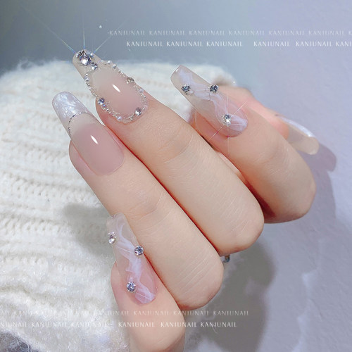
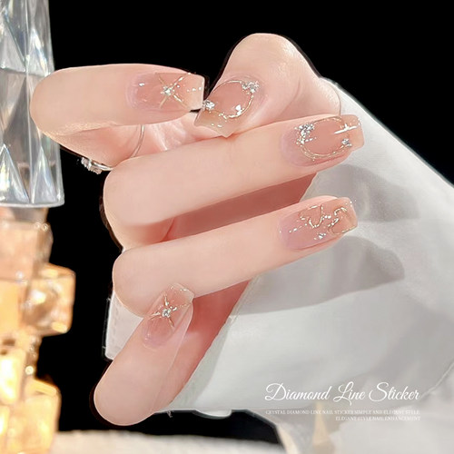
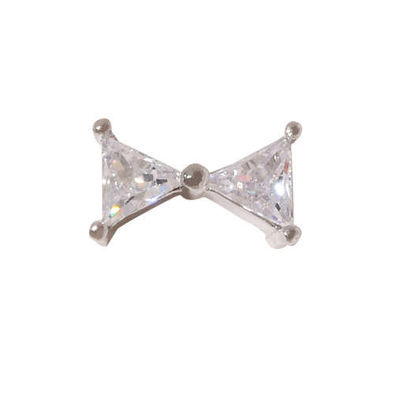
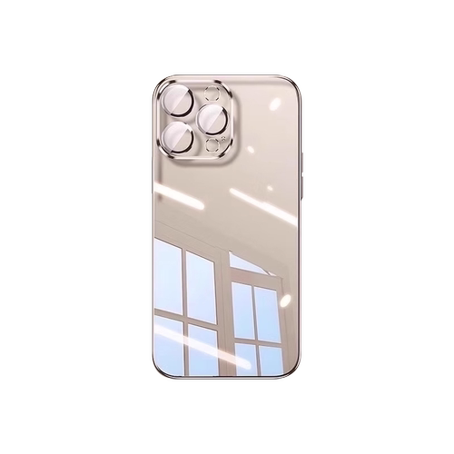
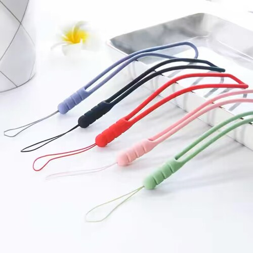
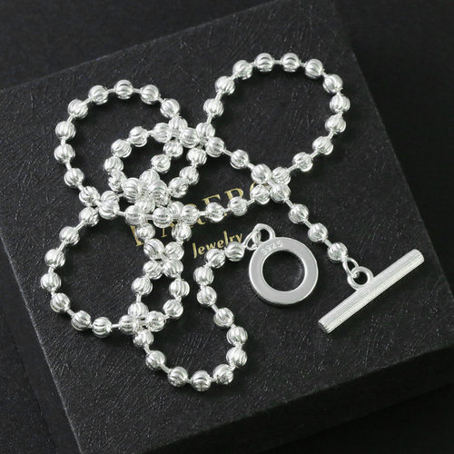
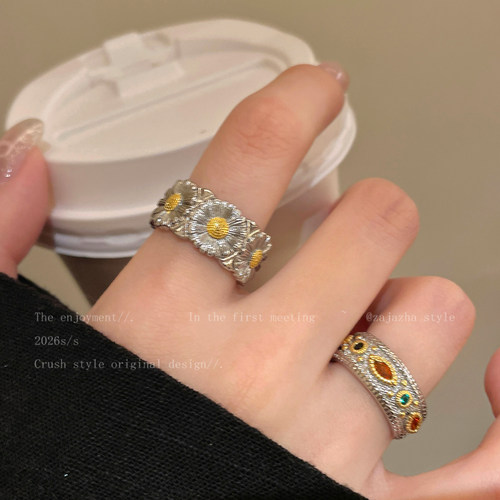
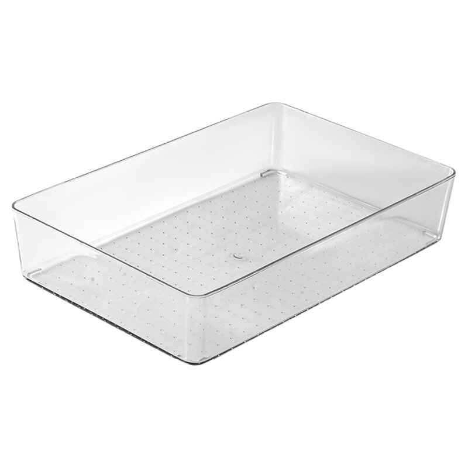

ΠΗΓΗ: TAOBAO · 2.000+ / ΜΗΝΑΔιαφανή κρύσταλλα νυχιών σε μικτά μεγέθη
Κρυσταλλάκια για σχέδια με στρας σε διάφορα μεγέθη. Η σελίδα πηγής αναφέρει 2.000+ μηνιαίες πωλήσεις. Πωλητής: Kaniu· επιβεβαιώστε διαστάσεις και υλικό.
COCO · Επιλογές προϊόντων για το εμπόριο Κίνας–Ελλάδας
Κατάλογος προϊόντων για την ελληνική αγορά. Μελετάμε τις τάσεις των καταναλωτών και επιλέγουμε είδη για διακόσμηση νυχιών, αξεσουάρ, κινητά και καθημερινή χρήση.
Δείτε τις κατηγορίες προϊόντων ↓COCO · ΕΠΙΛΕΓΜΕΝΑ
Επιλογές με βάση τις πρόσφατες τάσεις ηλεκτρονικών αγορών στην Ελλάδα.
ΕΝΕΡΓΕΣ ΠΡΟΣΦΟΡΕΣ ΠΗΓΩΝ · 01.11.2026
Οι ημερομηνίες προέρχονται από τις σελίδες πηγών και μπορεί να αλλάξουν. Δεν εμφανίζονται τιμές.
ΕΝΑΣ ΚΟΣΜΟΣ ΚΑΤΩ ΑΠΟ ΤΗΝ ΕΠΙΦΑΝΕΙΑ
Εξερευνήστε τις προτάσεις προϊόντων της COCO σε έναν ήρεμο, γαλάζιο κόσμο. Το περιεχόμενο είναι ενδεικτικό και δεν αποτελεί διαθέσιμο απόθεμα ή εμπορική προσφορά. Η διαθεσιμότητα και η συμμόρφωση επιβεβαιώνονται ξεχωριστά για κάθε προϊόν.
ΟΙ ΕΠΙΛΟΓΕΣ ΤΗΣ COCO
Με βάση τις αναζητήσεις και τις τάσεις πωλήσεων στο ελληνικό ηλεκτρονικό εμπόριο, ξεκινάμε με ελαφριά προϊόντα που παρουσιάζονται εύκολα και συνδυάζονται σε σετ.

ΠΗΓΗ: TAOBAO · 2.000+ / ΜΗΝΑΚρυσταλλάκια για σχέδια με στρας σε διάφορα μεγέθη. Η σελίδα πηγής αναφέρει 2.000+ μηνιαίες πωλήσεις. Πωλητής: Kaniu· επιβεβαιώστε διαστάσεις και υλικό.

ΠΗΓΗ: TAOBAO · 800+ / ΜΗΝΑΑυτοκόλλητα με λεπτές μεταλλικές γραμμές και σχέδια φιόγκου. Η σελίδα πηγής αναφέρει 800+ μηνιαίες πωλήσεις. Πωλητής: Miss Gooey· ελέγξτε πρόσφυση και διαστάσεις.

ΠΗΓΗ: TAOBAO · 300+ / ΜΗΝΑΜικρό διακοσμητικό με πέτρες ζιργκόν για σχέδια νυχιών. Η σελίδα πηγής αναφέρει 300+ μηνιαίες πωλήσεις. Πωλητής: Hanzhiyuan· επιβεβαιώστε μέγεθος και υλικό.

ΠΗΓΗ: TMALL · 300.000+ / ΜΗΝΑΔιάφανη θήκη σε εκδόσεις για διαφορετικά μοντέλα. Η σελίδα πηγής αναφέρει 300.000+ μηνιαίες πωλήσεις· επιβεβαιώστε συμβατότητα και δοκιμές αντοχής πριν από παραγγελία.

ΠΗΓΗ: TAOBAO · 4.000+ / ΜΗΝΑΚοντό λουράκι για κινητό με θηλιά καρπού, σε περισσότερα χρώματα. Η σελίδα πηγής αναφέρει 4.000+ μηνιαίες πωλήσεις. Πωλητής: Wangmiao Digital· επιβεβαιώστε τρόπο σύνδεσης και υλικό.

ΠΗΓΗ: TAOBAO · 53 / ΜΗΝΑΣχέδιο με σφαιρικούς κρίκους και κούμπωμα τύπου Τ. Η καταχώριση αναφέρει ασήμι S925 και μήκος 50 cm, καθώς και 53 μηνιαίες πωλήσεις· ζητήστε πιστοποίηση σύστασης.

ΠΗΓΗ: TAOBAO · 24 / ΜΗΝΑΔαχτυλίδι με ανάγλυφο μοτίβο μαργαρίτας, από τη νέα συλλογή του 2026. Η σελίδα πηγής αναφέρει 24 μηνιαίες πωλήσεις· επιβεβαιώστε μέγεθος, κράμα και επίστρωση.

ΠΗΓΗ: TAOBAO · 500+ / ΜΗΝΑΑνοιχτά διαχωριστικά δοχεία για συρτάρια, καλλυντικά και γραφική ύλη. Η σελίδα πηγής αναφέρει 500+ μηνιαίες πωλήσεις· επιβεβαιώστε διαστάσεις και τύπο πλαστικού.
 ΠΗΓΗ TAOBAO · 10.000+ / ΜΗΝΑ · ΠΡΟΣΦΟΡΑ ΕΩΣ 13 ΝΟΕ
ΠΗΓΗ TAOBAO · 10.000+ / ΜΗΝΑ · ΠΡΟΣΦΟΡΑ ΕΩΣ 13 ΝΟΕΚοντά τεχνητά νύχια σε διάφορα σχέδια cat-eye και γαλλικού μανικιούρ. Η πηγή αναφέρει 10.000+ μηνιαίες πωλήσεις και προσφορά έως 13 Νοεμβρίου 2026· τα στοιχεία αναφέρονται από τον πωλητή.
 ΠΗΓΗ TAOBAO · 700+ / ΜΗΝΑ · ΠΡΟΣΦΟΡΑ ΕΩΣ 13 ΝΟΕ
ΠΗΓΗ TAOBAO · 700+ / ΜΗΝΑ · ΠΡΟΣΦΟΡΑ ΕΩΣ 13 ΝΟΕΘήκη με απαλή υφή και διάφορα χρώματα για επιλεγμένα μοντέλα κινητών. Η πηγή αναφέρει 700+ μηνιαίες πωλήσεις και προσφορά έως 13 Νοεμβρίου 2026· επιβεβαιώστε τη συμβατότητα.
 ΠΗΓΗ TAOBAO · 20.000+ / ΜΗΝΑ
ΠΗΓΗ TAOBAO · 20.000+ / ΜΗΝΑΜαγνητικό δαχτυλίδι συγκράτησης που λειτουργεί και ως βάση προβολής. Η σελίδα Taobao αναφέρει 20.000+ μηνιαίες πωλήσεις· επιβεβαιώστε συμβατότητα. Η φωτογραφία προέρχεται από τον επίσημο κατάλογο της μάρκας.
 ΠΗΓΗ TAOBAO · 60.000+ · ΠΡΟΣΦΟΡΑ ΕΩΣ 13 ΝΟΕ
ΠΗΓΗ TAOBAO · 60.000+ · ΠΡΟΣΦΟΡΑ ΕΩΣ 13 ΝΟΕΑπλά σκουλαρίκια με ζιργκόν για καθημερινή χρήση. Η πηγή αναφέρει 60.000+ πωλήσεις και προσφορά έως 13 Νοεμβρίου 2026· ζητήστε στοιχεία για το μέταλλο και την ασφαλή επαφή με το δέρμα.
 ΠΗΓΗ TAOBAO · 1.000+ / ΜΗΝΑ · ΠΡΟΣΦΟΡΑ ΕΩΣ 27 ΝΟΕ
ΠΗΓΗ TAOBAO · 1.000+ / ΜΗΝΑ · ΠΡΟΣΦΟΡΑ ΕΩΣ 27 ΝΟΕΔιακοσμητικό κλιπ αυτιού με λεπτομέρειες πεταλούδας και αστεριού. Η πηγή αναφέρει 1.000+ μηνιαίες πωλήσεις· ελέγξτε εφαρμογή, φινίρισμα και σύνθεση μετάλλου.
 ΠΗΓΗ TAOBAO · 100+ / ΜΗΝΑ · ΠΡΟΣΦΟΡΑ ΕΩΣ 13 ΝΟΕ
ΠΗΓΗ TAOBAO · 100+ / ΜΗΝΑ · ΠΡΟΣΦΟΡΑ ΕΩΣ 13 ΝΟΕΚλασικά σκουλαρίκια με όψη μαργαριταριού σε μικρό καθημερινό σχέδιο. Η πηγή αναφέρει 100+ μηνιαίες πωλήσεις και προσφορά έως 13 Νοεμβρίου 2026· επιβεβαιώστε υλικά και επιμετάλλωση.
 ΠΗΓΗ TAOBAO · 500+ / ΜΗΝΑ
ΠΗΓΗ TAOBAO · 500+ / ΜΗΝΑΜικρή θήκη ταξιδιού με χωρίσματα για δαχτυλίδια και σκουλαρίκια. Η πηγή αναφέρει 500+ μηνιαίες πωλήσεις· επιβεβαιώστε διαστάσεις, εσωτερική επένδυση και διαθέσιμα χρώματα.
 ΠΗΓΗ TMALL · 60.000+ / ΜΗΝΑ · ΠΡΟΣΦΟΡΑ ΕΩΣ 21 ΔΕΚ
ΠΗΓΗ TMALL · 60.000+ / ΜΗΝΑ · ΠΡΟΣΦΟΡΑ ΕΩΣ 21 ΔΕΚΣακούλες φύλαξης ρούχων και κλινοσκεπασμάτων εκτός εποχής. Η πηγή αναφέρει 60.000+ μηνιαίες πωλήσεις και προσφορά έως 21 Δεκεμβρίου 2026· οι αντλίες και τα μεγέθη διαφέρουν ανά επιλογή.
Οι τιμές δεν εμφανίζονται σε αυτόν τον κατάλογο. Οι φωτογραφίες και τα στοιχεία παραπέμπουν σε σελίδες πηγής που παρουσιάζουν καταχωρίσεις από Taobao ή Tmall. Τα στοιχεία μηνιαίων πωλήσεων αναφέρονται όπως εμφανίζονται στις πηγές, χωρίς ανεξάρτητη επαλήθευση. Δεν πρόκειται για επιβεβαίωση αποθέματος ή εμπορική προσφορά. Επιβεβαιώστε προδιαγραφές, δικαιώματα χρήσης φωτογραφιών, υλικά, συμβατότητα και συμμόρφωση με τον προμηθευτή πριν από οποιαδήποτε παραγγελία. Πηγές τάσεων: Στοιχεία θερινών εκπτώσεων Skroutz 2026, Τι αγοράζουν οι καταναλωτές στην Ελλάδα και Έκθεση ελληνικού ηλεκτρονικού εμπορίου Γ΄ τριμήνου 2026.
ΓΙΑΤΙ ΑΥΤΕΣ ΟΙ ΕΠΙΛΟΓΕΣ
Οι εκτιμήσεις του Merchanto για τον Σεπτέμβριο 2026 δείχνουν μερίδια οργανικής αναζήτησης 23,9% στη Μόδα, 18,1% στο Σπίτι και τη Διακόσμηση, 16,9% στην Υγεία και την Ομορφιά και 16,7% στην Τεχνολογία. Στα στοιχεία των θερινών εκπτώσεων του Skroutz για το 2026, η Μόδα αντιστοιχούσε στο 32% των εκπτωτικών παραγγελιών, η Τεχνολογία στο 15% και το Σπίτι και η Διακόσμηση στο 12%. Η Skroutz περιλαμβάνει επίσης θήκες κινητών και προστατευτικά οθόνης στα δημοφιλή τεχνολογικά προϊόντα.
Επιλέξαμε μικρά προϊόντα που φωτογραφίζονται και συνδυάζονται εύκολα σε σετ: διακοσμητικά νυχιών, θήκες και λουράκια κινητών, κοσμήματα και διάφανους οργανωτές συρταριών. Οι πωλήσεις σε κάθε καρτέλα είναι όσα αναφέρει η συγκεκριμένη σελίδα πηγής και δεν εγγυώνται ζήτηση στην Ελλάδα. Πριν από την εισαγωγή, επιβεβαιώστε ποιότητα, ετικέτες, μεταφορικά και συμμόρφωση.
Τα στοιχεία αναζήτησης είναι εκτιμήσεις οργανικής επισκεψιμότητας στην Ελλάδα για τον Σεπτέμβριο 2026 από το Merchanto, όχι μετρήσεις ολόκληρης της αγοράς. Τα ποσοστά παραγγελιών αφορούν εκπτωτικές αγορές στο Skroutz από 13 Ιουλίου έως 31 Αυγούστου 2026.
ΑΣ ΒΡΟΥΜΕ ΚΑΤΙ ΞΕΧΩΡΙΣΤΟ
Πείτε μας ποια προϊόντα σας ενδιαφέρουν ή ποιος είναι ο προϋπολογισμός σας, ώστε να προτείνουμε κατάλληλες επιλογές για την ελληνική αγορά.
Στοιχεία επικοινωνίας σύντομαΤα στοιχεία επικοινωνίας θα προστεθούν εδώ μόλις δοθούν.